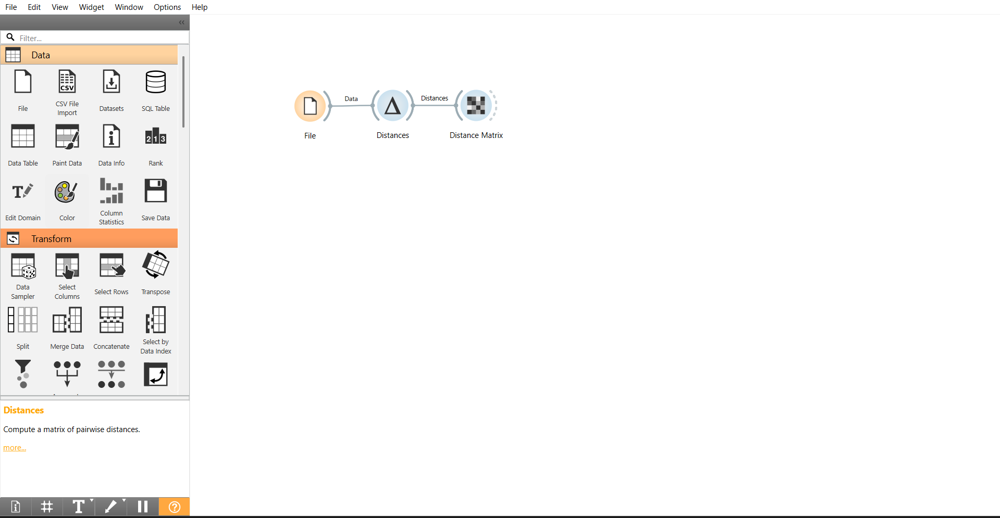
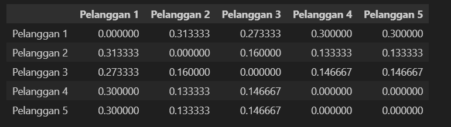

Mengukur Jarak Tipe Data Campuran (Gower Distance)#
Tujuan Perhitungan Jarak#
Tujuan utama dari perhitungan jarak pada dataset ini adalah untuk mengukur tingkat kemiripan (similarity) atau ketidakmiripan (dissimilarity) antar pelanggan asuransi perjalanan. Analisis ini sangat berguna untuk:
Segmentasi Pelanggan: Mengelompokkan pelanggan yang memiliki profil risiko atau latar belakang ekonomi serupa.
Sistem Rekomendasi: Memberikan penawaran paket asuransi yang tepat berdasarkan kemiripan profil pelanggan baru dengan pelanggan lama.
Analisis Karakteristik: Memahami fitur dominan yang membedakan satu kelompok pelanggan dengan pelanggan lainnya.
Data Understanding#
Dataset Travel Insurance Prediction digunakan untuk menganalisis karakteristik pelanggan. Dataset ini memiliki tipe data campuran (Numerik, Nominal/Kategorikal, dan Ordinal).
Deskripsi Atribut#
No |
Atribut |
Tipe Data |
Alasan Penggunaan |
|---|---|---|---|
1 |
Age |
Numerik |
Menunjukkan usia pelanggan untuk melihat pola kedekatan umur. |
2 |
AnnualIncome |
Numerik |
Mewakili tingkat pendapatan tahunan pelanggan. |
3 |
Employment Type |
Nominal |
Membedakan sektor pekerjaan (Government/Private). |
4 |
EverTravelledAbroad |
Nominal |
Menunjukkan pengalaman perjalanan internasional pelanggan. |
5 |
FamilyMembers |
Ordinal |
Menunjukkan jumlah anggota keluarga yang memiliki urutan logis. |
Perlakuan Tipe Data & Rumus#
Gower Distance menggabungkan berbagai tipe data dengan rumus: $\(d(i,j) = \frac{\sum_{k=1}^{n} s_{ij}^{(k)}}{n}\)$
Nominal (Kategorikal): Skor \(0\) jika sama, \(1\) jika berbeda.
Numerik: Skor dihitung berdasarkan selisih absolut dibagi rentang: \(s_{ij}^{(k)} = \frac{|x_{ik} - x_{jk}|}{R_k}\).
Ordinal: Data diubah menjadi numerik (Ranking) terlebih dahulu melalui proses normalisasi agar nilainya berada di skala \(0\) sampai \(1\): $\(z_{ik} = \frac{r_{ik} - r_{min}}{r_{max} - r_{min}}\)$ Setelah dikonversi, fitur ordinal diperlakukan sama seperti fitur numerik.
Missing Value dan Penanganan#
Pengecekan missing value penting dilakukan karena metode perhitungan jarak tidak dapat memproses nilai kosong (NaN).
import pandas as pd
import numpy as np
# --- STEP 1: LOAD DATA ---
df = pd.read_csv('TravelInsurancePrediction.csv')
# --- STEP 2: PENANGANAN MISSING VALUE ---
print("Jumlah Missing Value per Kolom:")
print(df.isnull().sum())
# --- STEP 3: KONVERSI ORDINAL KE NUMERIK ---
# Kita gunakan FamilyMembers sebagai data Ordinal.
# Rumus: (Nilai - Min) / (Max - Min) agar skala menjadi 0 sampai 1
min_fam = df['FamilyMembers'].min()
max_fam = df['FamilyMembers'].max()
df['FamilyMembers_Scaled'] = (df['FamilyMembers'] - min_fam) / (max_fam - min_fam)
# --- STEP 4: PREPARASI SAMPEL ---
# Mengambil 5 baris pertama untuk contoh perhitungan matriks
# Kolom: Age(Num), AnnualIncome(Num), Employment Type(Nom), EverTravelledAbroad(Nom), FamilyMembers_Scaled(Ord)
cols = ['Age', 'AnnualIncome', 'Employment Type', 'EverTravelledAbroad', 'FamilyMembers_Scaled']
types = ['num', 'num', 'nom', 'nom', 'ord']
df_subset = df[cols].head(5).copy()
# --- STEP 5: HITUNG RANGE (Rk) ---
# Range dari populasi data asli untuk normalisasi fitur numerik & ordinal
ranges = {
'Age': df['Age'].max() - df['Age'].min(),
'AnnualIncome': df['AnnualIncome'].max() - df['AnnualIncome'].min(),
'FamilyMembers_Scaled': 1.0 # Nilai sudah 0-1, maka range maksimalnya 1
}
# --- STEP 6: FUNGSI GOWER DISTANCE ---
def calculate_gower(row1, row2, types, ranges, columns):
total_score = 0
for i, col in enumerate(columns):
if types[i] == 'num' or types[i] == 'ord':
# Rumus Numerik & Ordinal: |xi - xj| / Range
total_score += abs(row1[col] - row2[col]) / ranges[col]
else:
# Rumus Nominal: 0 jika sama, 1 jika beda
total_score += 1 if row1[col] != row2[col] else 0
return total_score / len(columns)
# --- STEP 7: GENERATE MATRIKS JARAK ---
n = len(df_subset)
matrix = np.zeros((n, n))
for i in range(n):
for j in range(n):
matrix[i,j] = calculate_gower(df_subset.iloc[i], df_subset.iloc[j], types, ranges, cols)
# Membuat DataFrame hasil matriks agar rapi
df_gower = pd.DataFrame(matrix,
columns=[f'P{i+1}' for i in range(n)],
index=[f'P{i+1}' for i in range(n)])
print("\nData 5 Sampel (Setelah Skalasi Ordinal):")
print(df_subset)
print("\nMatriks Jarak Gower (Campuran):")
df_gower
Jumlah Missing Value per Kolom:
Unnamed: 0 0
Age 0
Employment Type 0
GraduateOrNot 0
AnnualIncome 0
FamilyMembers 0
ChronicDiseases 0
FrequentFlyer 0
EverTravelledAbroad 0
TravelInsurance 0
dtype: int64
Data 5 Sampel (Setelah Skalasi Ordinal):
Age AnnualIncome Employment Type EverTravelledAbroad \
0 31 400000 Government Sector No
1 31 1250000 Private Sector/Self Employed No
2 34 500000 Private Sector/Self Employed No
3 28 700000 Private Sector/Self Employed No
4 28 700000 Private Sector/Self Employed No
FamilyMembers_Scaled
0 0.571429
1 0.714286
2 0.285714
3 0.142857
4 0.857143
Matriks Jarak Gower (Campuran):
| P1 | P2 | P3 | P4 | P5 | |
|---|---|---|---|---|---|
| P1 | 0.000000 | 0.341905 | 0.330476 | 0.385714 | 0.357143 |
| P2 | 0.341905 | 0.000000 | 0.245714 | 0.247619 | 0.161905 |
| P3 | 0.330476 | 0.245714 | 0.000000 | 0.175238 | 0.260952 |
| P4 | 0.385714 | 0.247619 | 0.175238 | 0.000000 | 0.142857 |
| P5 | 0.357143 | 0.161905 | 0.260952 | 0.142857 | 0.000000 |
Mengukur Jarak Tipe Data Campuran (Gower Distance)#
Tujuan Perhitungan Jarak#
Tujuan utama dari perhitungan jarak pada dataset ini adalah untuk mengukur tingkat kemiripan (similarity) atau ketidakmiripan (dissimilarity) antar pelanggan asuransi perjalanan. Analisis ini sangat berguna untuk:
Segmentasi Pelanggan: Mengelompokkan pelanggan yang memiliki profil risiko atau latar belakang ekonomi serupa.
Sistem Rekomendasi: Memberikan penawaran paket asuransi yang tepat berdasarkan kemiripan profil pelanggan baru dengan pelanggan lama.
Analisis Karakteristik: Memahami fitur dominan yang membedakan satu kelompok pelanggan dengan pelanggan lainnya.
Data Understanding#
Dataset Travel Insurance Prediction digunakan untuk menganalisis karakteristik pelanggan. Dataset ini memiliki tipe data campuran (Numerik dan Kategorikal).
Deskripsi Atribut#
No |
Atribut |
Tipe Data |
Alasan Penggunaan |
|---|---|---|---|
1 |
Age |
Numerik |
Menunjukkan usia pelanggan untuk melihat pola kedekatan umur |
2 |
Employment Type |
Kategorikal |
Membedakan sektor pekerjaan (Government/Private) |
3 |
GraduateOrNot |
Kategorikal |
Menunjukkan status pendidikan terakhir pelanggan |
4 |
AnnualIncome |
Numerik |
Mewakili tingkat pendapatan tahunan pelanggan |
5 |
EverTravelledAbroad |
Kategorikal |
Menunjukkan pengalaman perjalanan internasional pelanggan |
Missing Value dan Penanganan#
Pengecekan missing value penting dilakukan karena metode perhitungan jarak tidak dapat memproses nilai kosong (NaN).
import pandas as pd
import numpy as np
# Load Dataset
df = pd.read_csv('TravelInsurancePrediction.csv')
# Seleksi fitur utama
selected_features = ['Age', 'Employment Type', 'GraduateOrNot', 'AnnualIncome', 'EverTravelledAbroad']
df_check = df[selected_features]
# Cek Missing Value
print("Hasil Pengecekan Missing Value per Kolom:")
print(df_check.isnull().sum())
# Menampilkan 5 data pertama untuk sampel
df_subset = df_check.head(5).copy()
print("\nSampel 5 Data Pertama:")
display(df_subset)
Hasil Pengecekan Missing Value per Kolom:
Age 0
Employment Type 0
GraduateOrNot 0
AnnualIncome 0
EverTravelledAbroad 0
dtype: int64
Sampel 5 Data Pertama:
| Age | Employment Type | GraduateOrNot | AnnualIncome | EverTravelledAbroad | |
|---|---|---|---|---|---|
| 0 | 31 | Government Sector | Yes | 400000 | No |
| 1 | 31 | Private Sector/Self Employed | Yes | 1250000 | No |
| 2 | 34 | Private Sector/Self Employed | Yes | 500000 | No |
| 3 | 28 | Private Sector/Self Employed | Yes | 700000 | No |
| 4 | 28 | Private Sector/Self Employed | Yes | 700000 | No |
Metode Perhitungan: Gower Distance#
Gower Distance menghitung rata-rata dari perbedaan pada setiap fitur \(k\) antara dua objek \(i\) dan \(j\):
Aturan Perhitungan Skor (\(s_{ij}^{(k)}\)):#
Fitur Numerik (Age, AnnualIncome): Dihitung dengan membagi selisih absolut dengan rentang (range) nilai fitur tersebut: $\(s_{ij}^{(k)} = \frac{|x_{ik} - x_{jk}|}{R_k}\)$
Fitur Kategorikal (Employment, Graduate, Abroad): Bernilai 0 jika kategorinya sama, dan 1 jika berbeda.
Contoh Perhitungan Manual (Pelanggan 1 vs Pelanggan 2)#
Berdasarkan data sampel di atas:
Age: \(|31 - 31| / 10 = 0\)
Employment Type: Gov vs Private (Beda) = \(1\)
GraduateOrNot: Yes vs Yes (Sama) = \(0\)
AnnualIncome: \(|400.000 - 1.250.000| / 1.500.000 = 0.5667\)
EverTravelledAbroad: No vs No (Sama) = \(0\)
Total Jarak Gower: $\(d(1,2) = \frac{0 + 1 + 0 + 0.5667 + 0}{5} = \mathbf{0.3133}\)$
def calculate_gower(row1, row2, types, ranges):
dist = 0
for i, col in enumerate(row1.index):
if types[i] == 'num':
dist += abs(row1[col] - row2[col]) / ranges[col]
else:
dist += 1 if row1[col] != row2[col] else 0
return dist / len(row1)
# Parameter (Range: Age=10, Income=1.500.000)
ranges = {'Age': 10, 'AnnualIncome': 1500000}
types = ['num', 'cat', 'cat', 'num', 'cat']
n = len(df_subset)
matrix = np.zeros((n, n))
for i in range(n):
for j in range(n):
matrix[i,j] = calculate_gower(df_subset.iloc[i], df_subset.iloc[j], types, ranges)
df_gower = pd.DataFrame(matrix,
columns=['Pelanggan 1', 'Pelanggan 2', 'Pelanggan 3', 'Pelanggan 4', 'Pelanggan 5'],
index=['Pelanggan 1', 'Pelanggan 2', 'Pelanggan 3', 'Pelanggan 4', 'Pelanggan 5'])
print("Matriks Jarak Gower (Output Python):")
display(df_gower)
Matriks Jarak Gower (Output Python):
| Pelanggan 1 | Pelanggan 2 | Pelanggan 3 | Pelanggan 4 | Pelanggan 5 | |
|---|---|---|---|---|---|
| Pelanggan 1 | 0.000000 | 0.313333 | 0.273333 | 0.300000 | 0.300000 |
| Pelanggan 2 | 0.313333 | 0.000000 | 0.160000 | 0.133333 | 0.133333 |
| Pelanggan 3 | 0.273333 | 0.160000 | 0.000000 | 0.146667 | 0.146667 |
| Pelanggan 4 | 0.300000 | 0.133333 | 0.146667 | 0.000000 | 0.000000 |
| Pelanggan 5 | 0.300000 | 0.133333 | 0.146667 | 0.000000 | 0.000000 |
Interpretasi Hasil#
Nilai Diagonal (0.0000): Menunjukkan jarak objek terhadap dirinya sendiri adalah nol (simetris).
Skala Jarak: Semakin mendekati 0, kedua pelanggan semakin mirip. Semakin mendekati 1, kedua pelanggan semakin berbeda.
Hasil Analisis: Pelanggan 1 dan Pelanggan 2 memiliki jarak 0.3133, yang menunjukkan ketidakmiripan moderat yang dipengaruhi oleh perbedaan sektor pekerjaan dan pendapatan tahunan.
Implementasi Menggunakan Orange Data Mining#
Berikut adalah validasi alur kerja menggunakan Orange Data Mining:

